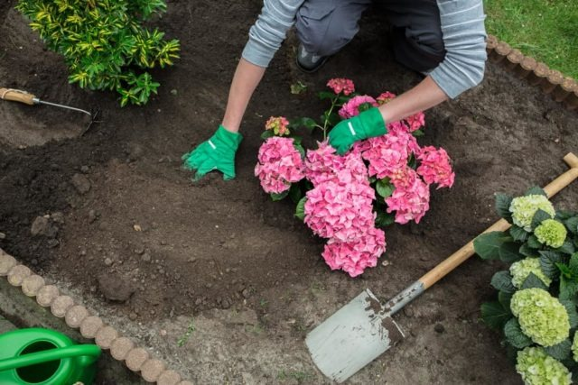

Floreciendo en primavera y verano, las hortensias son consideradas un arbusto. A pesar de su capacidad para ocupar grandes espacios en tu jardín, el cómo cultivarlas no es una pregunta que ni siquiera un jardinero novato debiera preguntar, estas bellezas crecen prácticamente por sí mismas. Alcanzando hasta 5m de altura, la hortensia crece rápidamente y con frecuencia llena un espacio en un solo verano. Con flores que comienzan en primavera y que a menudo duran desde el verano hasta principios de otoño, las flores de hortensia pueden transformarse en la planta fundamental de tu paisaje
Plantando Hortensias
Mejor época para plantar Hortensias.
El otoño es la mejor estación para plantar hortensias, seguida de principios de primavera. La idea es darle suficiente tiempo al arbusto para establecer un sistema de raíces sano antes de la floración. La mejor hora del día para plantar es temprano por la mañana o al final de la tarde. Las partes más frías del día ofrecen protección contra el estrés por calor. Mantén las plantas nuevas bien regadas hasta que se establezcan.
Donde plantar Hortensias.
El mejor lugar para plantar hortensias es en un lugar protegido con mañanas soleadas y tardes sombrías.Evita plantar directamente debajo de los árboles, lo que puede llevar a la competencia por el agua y los nutrientes. Los vientos fuertes pueden rasgar y dañar las hojas y destruir las flores.
Mejor suelo para Hortensias.
Las hortensias crecen bien en un suelo que contenga una gran cantidad de material orgánico. Un buen drenaje es vital. Si bien a las hortensias prefieren la tierra húmeda, no pueden tolerar que esta se empape de agua.
Cómo propagar las Hortensias

Cava una pequeña zanja cerca de tu planta de hortensia.
Dobla una rama hacia la zanja para que toque el suelo con el centro de la rama (De 15 a 30 centímetros de rama deben extenderse más allá de la zanja).
Haz rasguños en la corteza donde la rama toca el suelo de la zanja.
Rellena la zanja y coloca encima algo pesado como un ladrillo o una piedra.
Con el tiempo, la rama formará su propio sistema de raíz y puede ser trasplantada a una nueva ubicación.
Riega a un ritmo de 2.5 centímetros por semana durante la temporada de crecimiento. Riega 3 veces a la semana para estimular el crecimiento de las raíces. Las hortensias de hojas grandes y lisas requieren más agua, pero todas las variedades se benefician de la humedad constante. Riega profundamente y mantén la humedad lejos de las flores y las hojas. El riego en la mañana ayudará a evitar que las hortensias se marchiten durante los días calurosos.
Agrega mantillo debajo de las hortensias para ayudar a mantener el suelo húmedo y fresco. Un mantillo orgánico se descompone con el tiempo, agrega nutrientes y mejora la textura del suelo.
Aplica fertilizante basado en sus hortensias específicas. Cada variedad tiene necesidades diferentes y se beneficiará si obtiene el indicado. La mejor manera de determinar sus necesidades de fertilidad es mediante una prueba de suelo.
Protégelas contra plagas y enfermedades eligiendo elementos con rasgos resistentes. En las hortensias pueden aparecer manchas de hojas, heces, marchitamiento y mildiú polvoriento. Las plagas no son comunes en las hortensias, pero pueden aparecer cuando las plantas se estresan. Las posibles plagas incluyen áfidos, ácaros rojos, entre otros. Cuidar adecuadamente las hortensias es tu mejor defensa.